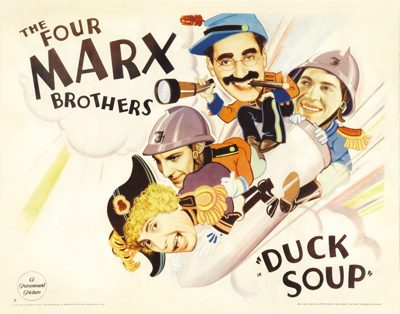

Duck Soup

Starring: Groucho Marx, Harpo Marx, Chico Marx
Director: Leo McCarey
Writer: Harry Ruby, Bert Kalmar
Producer: Herman J. Mankiewicz
Duck Soup is a 1933 American pre-Code musical comedy film written by Bert Kalmar and Harry Ruby (with additional dialogue by Arthur Sheekman and Nat Perrin) and directed by Leo McCarey. Released by Paramount Pictures on November 17, 1933, it stars the four Marx Brothers (Groucho, Harpo, Chico, and Zeppo) and also features Margaret Dumont, Louis Calhern, Raquel Torres and Edgar Kennedy.
Trivia
- The Marx Brothers' previous film, Horse Feathers, had been Paramount's highest-grossing film of 1932.
- Encouraged by this success, the studio suggested on August 2, 1932, that they rush out a follow-up.
- Already at this early stage, the story (provisionally entitled Oo La La) was set in a mythical kingdom.
Previous Showings
11 Runs • 5 Festivals
Original Billings: 1 run (December 10, 1933)
Original Run: December 10, 1933 (Sunday - Tuesday)
All runs on record (11):
- December 10, 1933 (Sunday - Tuesday)Marx Brothers
- February 11, 1988w/ Monkey Business (1931)
- April 25 - 26, 1990w/ A Night at the Opera
- July 15 - 22, 1993w/ A Night at the Opera
- September 27 - 29, 1996w/ A Night at the Opera
- October 26 - 27, 2002Fall Folliesw/ You Can't Take It with You
- February 18 - 20, 2005w/ The Lady Eve
- July 2 - 4, 2008Summer 2008 Bette Davis, James Stewart, silent films and more!w/ Animal Crackers
- December 12 - 15, 2013Preston Sturges and The Marx Brosw/ The Miracle of Morgan's Creek
- August 3 - 5, 2016Summer 2016w/ A Midsummer Night's Dream
- January 27 - 28, 2018Paramount Pictures That played at the Stanford Theatre From 1930 to 1935w/ It's a Gift